Channels
Stereo Recording
Most consumer level microphones will only record in one channel of
audio (mono), so it is just a waste of space to record that input to a
stereo recording, you don't gain any new detail in the audio and it
will sound exactly the same as a mono recording when played back.
That said, there are microphones available that do record two
channels. If you require this, you can set the number of channels
to record under the Edit -> Preferences -> Devices menu for the
specific device that will support multi-channel recording.
Mixing Audio Sources
More common than having a single device that records in stereo, is
having multiple devices recording different sounds. An example
could be a radio or tv talk show where the host is one channel of
audio, and each guest has their own channel of audio. Another
example would be recording a band playing, where each musician and/or
instrument has its own track of audio. There are ways to record
this in audacity (with the help of the JACK audio routing software on
linux), but we won't go into them here.
Instead, we'll start with a scenario where there are several
independent tracks of audio that have already been recorded, and need
to be edited together into one piece of audio.
There is one track for each person talking, you can download them here (es)
and here (es). Below is a
transcript of
the audio:
F: Hi there
M: Hi
F: How are you doing?
M: I'm fine, how are you?
F: Fine as well. What are you doing now?
M: I'm reading a book, why?
F: Do you want to go to the zoo with me?
M: Sure, that sounds fun.
M: Hola
H: Hola
M: Como estas?
H: Estoy bien, y tu?
M: Estoy bien tambien. Que haces ahorita?
H: Estoy leyendo un libro. Por que?
M: Quieres ir al parque zoologico con migo?
H: Si, que divertido.
Once you have the first clip open in audacity, open the second one by
going to File -> Import -> Audio... and selecting the second clip
from your hard drive. Now they should both be open, try playing
them back together by pushing the play button.
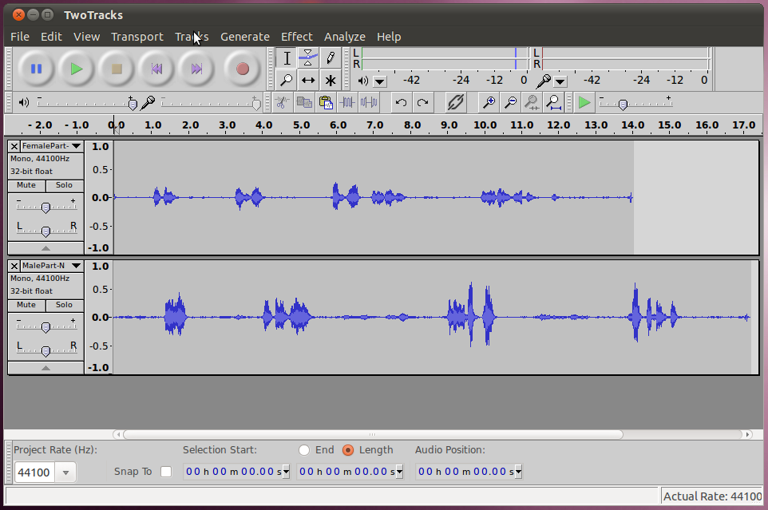
You'll notice that they don't line up. The two subjects are
talking over each other. This is a common occourrence when
recording multi-track audio, as each track may not start the recording
at the same spot. To fix this we will have to synchronize (sync)
them manually. But before we do that, lets give these tracks
names so we can keep track of them (this is even more important when
you have lots of tracks), to do this, click on the drop down arrow for
the track, and select Name. For the female track name it "Female"
and for the male track, name it "Male".
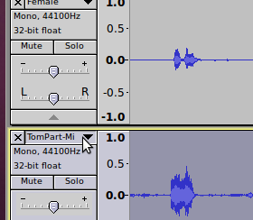
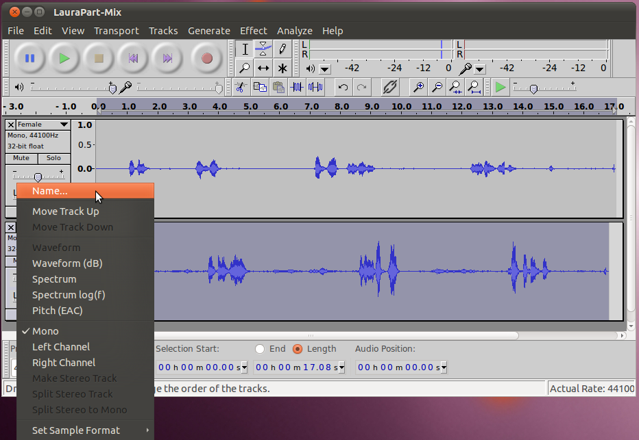
In addition, now would be a good time to save the audacity project as a
.aup file and directory.
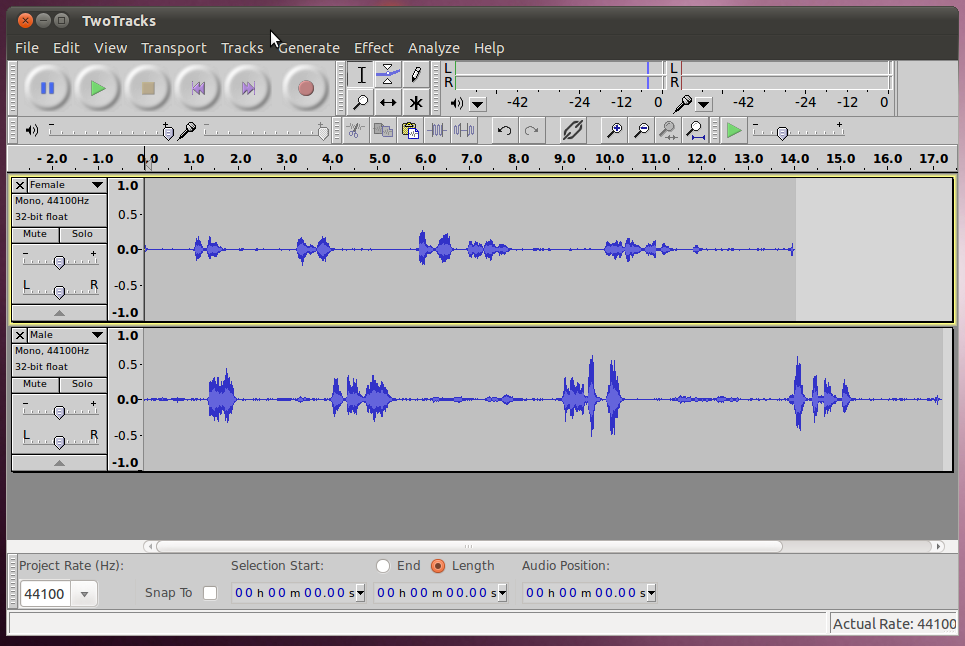
Shift Tool
Now we're ready to sync the audio so that the final result has the two
subjects talking to each other at the correct times. Select the
Time Shift Tool from just below and to the right of the selection tool.
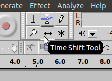
Then it is as simple as clicking on the track you want to move, and
dragging it to the correct spot. In this case, lets move the male
track (because the female track talks first). Just move it so
that on the waveform the first male response lines up in the gap
between the first and second female responses.
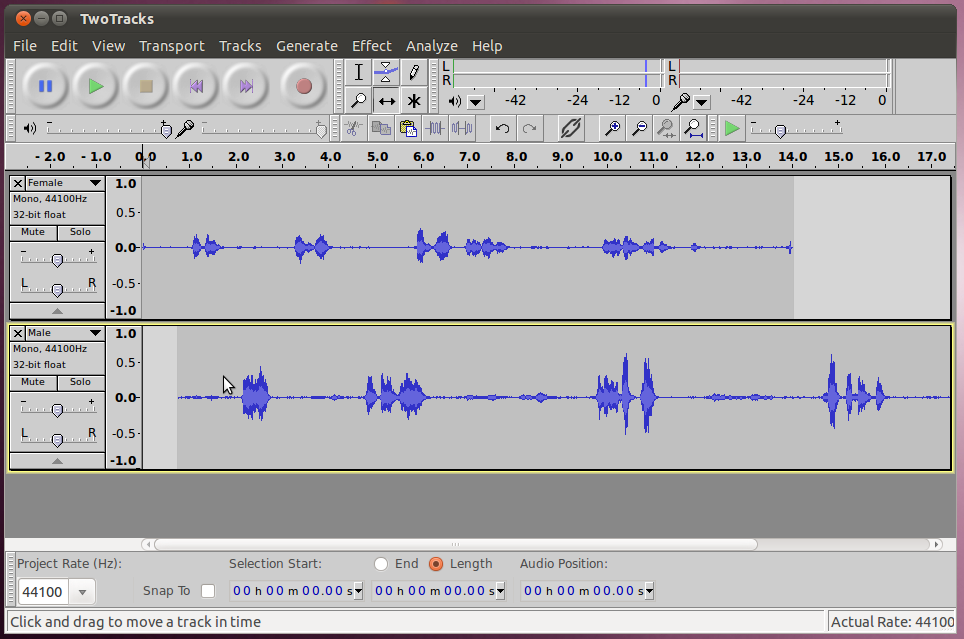
If you try playing it back at this point you will notice that it starts
out lined up, but then later on in the recording it gets out of
wack. There are several possible reasons this could happen, but
in this case it is because these tracks were done in two separate
takes, with only one person's voice being recorded each time.
Because they had no frame of reference the same tempo wasn't kept both
times. To fix this, we will have to add in extra space to
the blank areas to make up the difference. Simply click at the
spot where you want to add space to put the cursor there, the select
Generate -> Silence, then type the number of seconds you want to add
(try something small like 0.5 to start with, you may need to select a
different option from the drop down to pick a unit that has fractions
of seconds, such as hh:mm:ss+hundredths) and click OK.
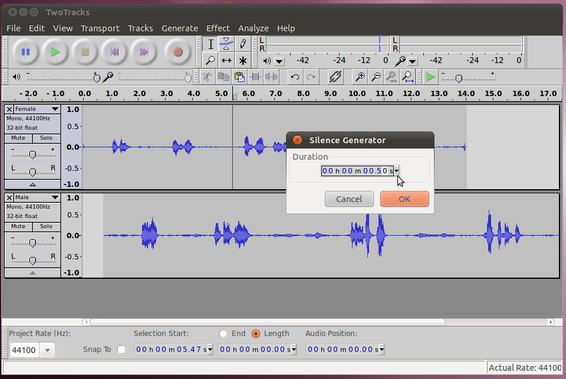
Listen to the result to see if it sounds better, if it needs more go
back and do it again. Repeat for each section that doesn't line
up, moving
from left to right in the two tracks. If you were to start at the
right and move to the left, each change you made would throw off those
that you had done previously.
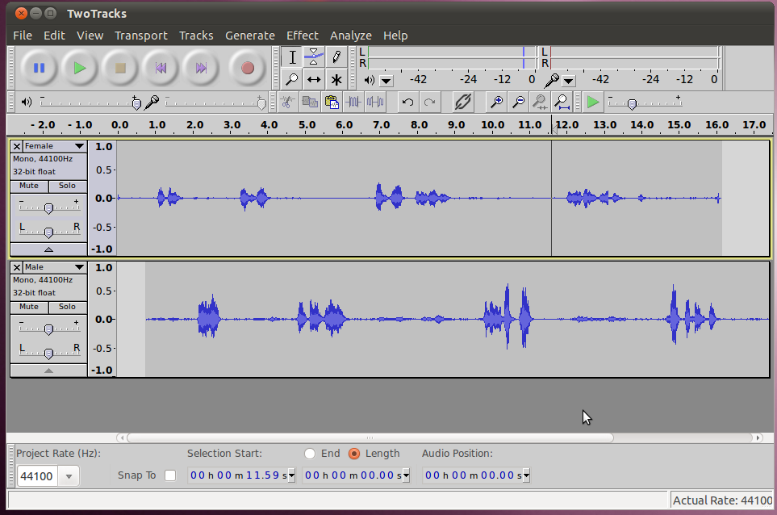
Synch with Audio Marker
Another way to sync audio is to do it from the beginning. This
time the two subjects were recorded in the same take, from two
different microphones. You can download the two separate tracks here and here.
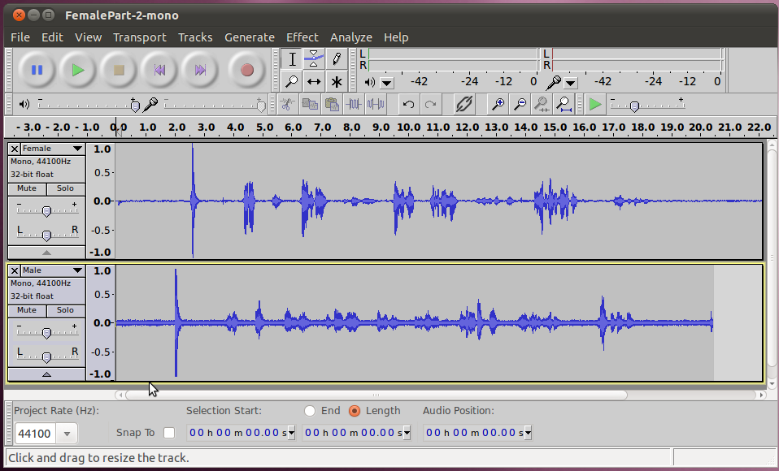
When you play them back, you'll notice that they both have a loud sharp
sound towards the beginning. This sound was intentionally made
(can be done with a professional clap-board or just by clapping your
hands once) so that the two tracks could be synchronized starting at
this point.
Its easy to synchronize them now. Just zoom in on the part with
the sudden sound, and move the tracks with the Time Shift Tool until
the sound matches exactly.
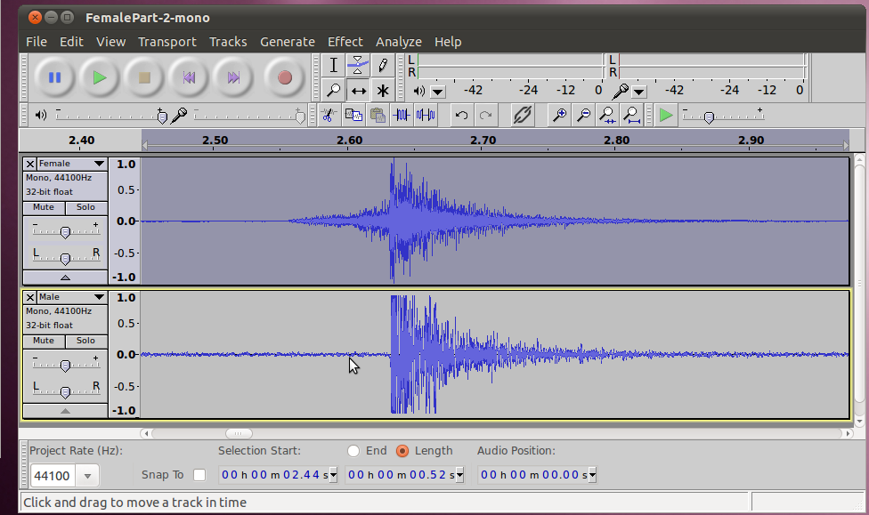
Now (or when you're all done with your other editing if you prefer) you
can cut the exact same amount (use the selection editor at the bottom,
select zero for the start and the same length in both tracks) of sound
off the front of both recordings to get to a starting place that is
after the clap. It was only there for synchronization, and we
don't want it in the final recording.
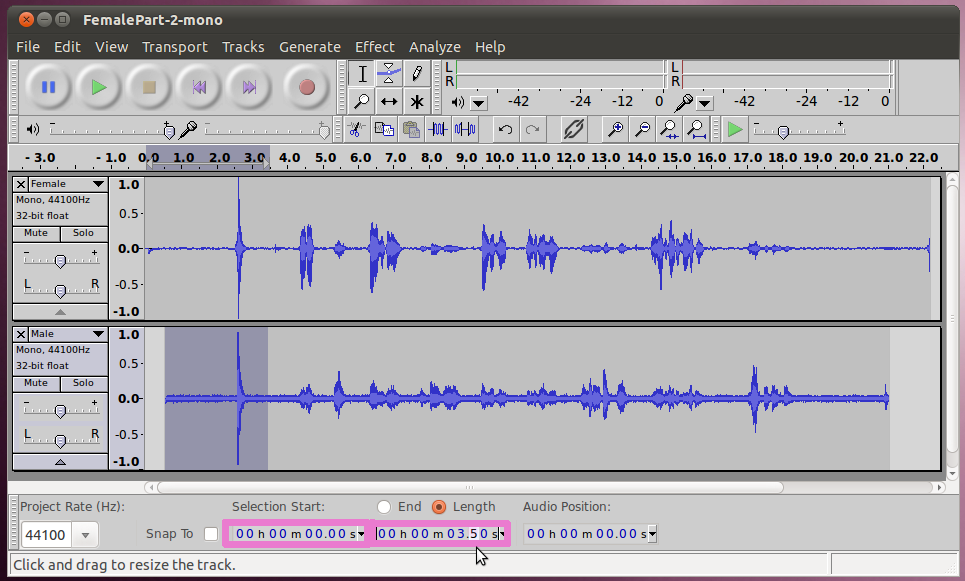
Too Much Audio
You may have noticed that in some cases the male microphone picked up
the female talking and the female microphone picked up the male
talking. This is a fairly common occurrence. We want to
remove this, because if the same audio shows up at a time that is even
a split second different, it can drastically change the final audio
(possibly sound like an echo or reverberation). Below are the
areas in this clip where this is happening.
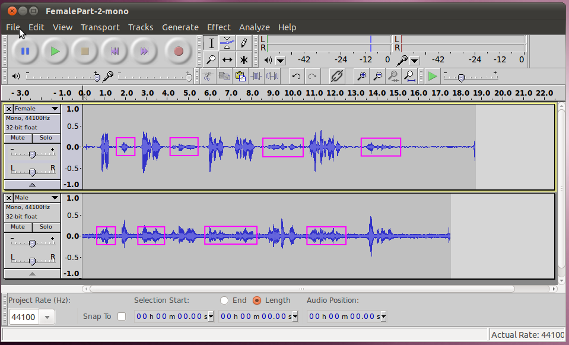
One way to fix this would be to use the "Silence Audio" functionality
that we used in the last section. Its usefulness is obvious here,
if we were to simply cut out the additional audio from the tracks,
their duration would change, and it wouldn't be possible to match them
up. Instead, we can go, select each area and then run "Silence
Audio".
Another option to fix this would be to use the Envelope Tool. The
Envelope Tool allows you to create a graphical envelope around the
waveform which indicates the volume for that area. This allows
you to simply turn down the volume only for areas that we don't want to
hear, while leaving other areas normal.
To apply it, switch to the Envelope Tool, immediately to the right of
the selection tool.
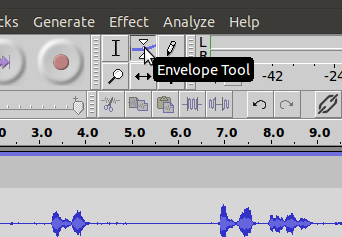
The envelope tool works by applying control points to the volume at
specific points in time. Each time you apply a control point by
clicking on the waveform, it creates four handles that allow you to
adjust the volume. By default (for 100% volume) on control point
is at each of the -100%, -50%, 50%, and 100% levels. You
can grab any of these points and move it up or down to change the
volume level at that point.
The first thing I do when I start using the envelope tool is to set
control points (that aren't going to move) for the portions of audio I
don't want to change. Here are the "fixed" control points,
applied to the male voice.

After the fixed points are applied, its easy to take the envelope down
to zero in sections between them. Just click on it to create a
control point, and drag it all the way down towards the center.
As you drag it down, you will see the envelope form a curve from your
new control point, up to the control points around the good audio,
giving you a smooth transition (this is more important if you aren't
completely silencing the audio).
Here are the results after the envelope tool has been applied to
silence the other sounds out of the male track.
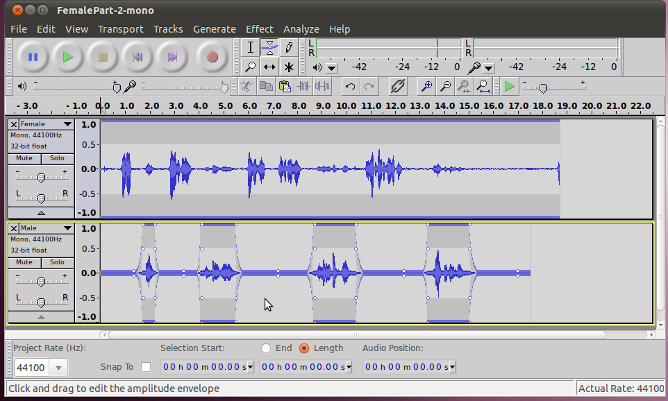
The envelope tool is even more useful where you want to constantly
change the levels of sound for different tracks relative to each
other. For instance if you have a band where each instrument is
in its own track, it is easy to use the envelope tool to lower the
sound from the drums during a portion of the song where you want the
soloist to come through clearly.
Creating a stereo track
Now that we have two good tracks, one for each speaker, one thing we
can set them up to output a stereo track that has one person talking
from each channel. That would make it sound like one person is
taking from the left and the other is talking from the right.
Audacity is smart, in that when it exports the project, it will
automatically create a stereo file. All we need to do is control
how much volume comes out of each channel for each track. In the
tools for the track, to the left of the waveform, there is a slider
with a L and a R on it (for Left and Right). We can move the
slider for the female voice to the left and the male voice to the right,
so that it sounds like the female talker is off to the left and the
male talker is on the other side.
It is not necessary to move the slider all the way over, in fact it is
often better to leave a bit of each track coming out the opposite
channel. This is because, in nature sound from a person talking
directly to your left or right will have sound wrap around your head
(and bounce off things) and arrive at the opposite ear. If the
listener was wearing headphones and all the audio was coming from only
one side, it would sound unnatural.
Here's an example with the settings changed for different channels.
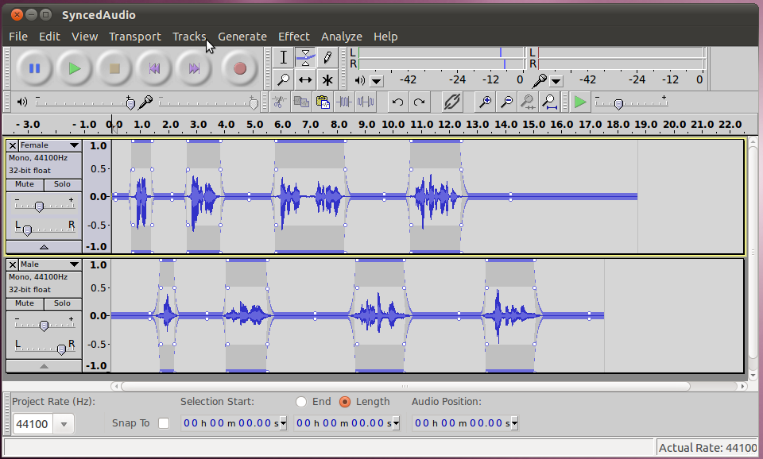
Another quick tip. When the audio was recorded, the
microphone used by the female picked up a bit stronger and her channel
is a bit louder. To make them match each other better, the volume
slider (the one with the "-" and "+") was lowered a bit for her
channel. The other problem with this audio is that the male's
microphone picked up a lot of background noise, and that needs to be
removed, we'll work on that in the next section!